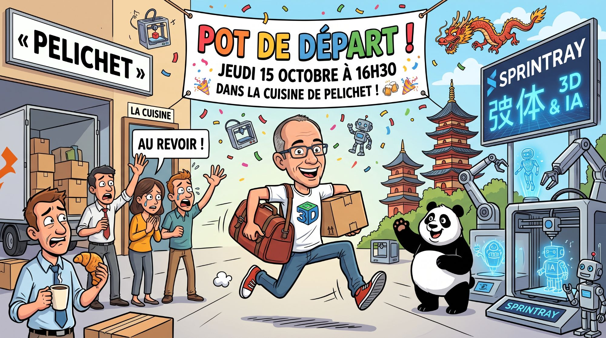

Arnaud s'envole pour la Chine… et vous êtes tous invités 🎉

Salut à toutes et à tous, l'équipe de choc !
Après avoir passé tout ce temps avec vous à maîtriser l'art subtil du carton parfait, du scotch qui colle vraiment et de la logistique de haute voltige chez Pelichet, j'ai pris une décision radicale. J'ai décidé de faire… mes propres cartons !
Et attention, je ne déménage pas juste de l'autre côté du lac. Je m'envole vers l'Empire du Milieu, la Chine, pour rejoindre Sprintray !
Eh oui, je retourne à mes premières amours : l'impression 3D et l'Intelligence Artificielle. Mon objectif secret ? Créer un robot IA capable d'imprimer en 3D un carton qui se monte tout seul (ne me remerciez pas, je déposerai le brevet). Plus sérieusement, c'est une nouvelle aventure incroyable qui m'attend, mais vous allez tous beaucoup me manquer.
Pour fêter ce départ, pleurer un bon coup (ou fêter enfin ma disparition, je ne juge pas), je vous convie à un pot de départ qui restera dans les annales.
📅 Quand ? Le jeudi 15 octobre à 16h30 précises. (Venez à l'heure, après je commence à m'adapter au décalage horaire de Shanghai).
📍 Où ? Dans la célèbre cuisine de Pelichet (parce que c'est là qu'on trouve toujours les meilleurs dossiers… et le café).
Venez nombreux ! Il y aura à boire, à manger, et peut-être même que j'imprimerai les gobelets en 3D si j'ai le temps.
À jeudi pour trinquer ensemble !
Arnaud